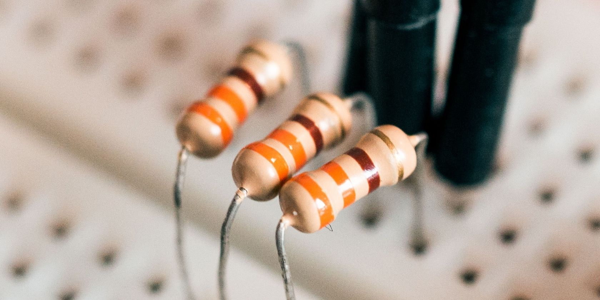
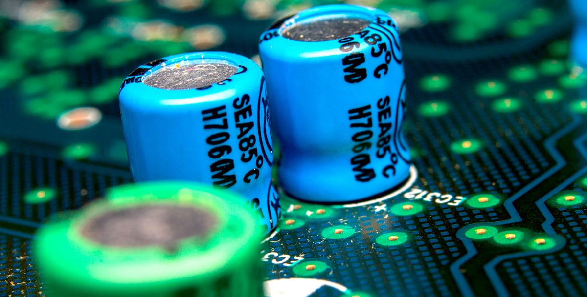
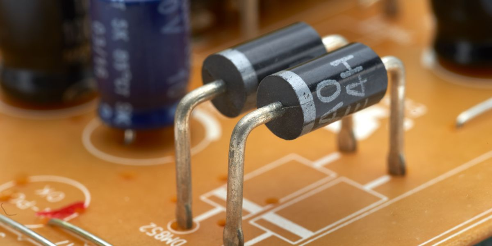
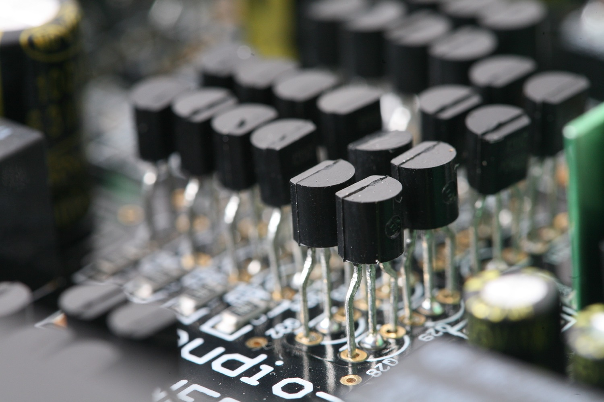

Understanding Resistors: A Brief Introduction
Resistors are essential components in electronic circuits, acting as passive devices that control the flow of electric current. Their primary function is to resist the flow of electrons, limiting the amount of current passing through a circuit. This resistance is measured in ohms (Ω), and resistors come in a variety of types and sizes, each offering different levels of resistance.
By strategically placing resistors within a circuit, voltage levels can be adjusted and current can be limited to protect sensitive components from damage. They also help in dividing voltages, creating voltage drops, and controlling the gain in amplifiers.
Resistors are marked with color-coded bands that indicate their resistance value and tolerance. The resistance value represents the amount of opposition a resistor offers to the flow of current, while the tolerance specifies the allowable deviation from the stated resistance value.
Whether in consumer electronics, industrial machinery, or scientific experiments, resistors play a vital role in ensuring the proper functioning of electrical circuits. Understanding their characteristics and selecting the right resistor for your specific application is crucial for achieving optimal circuit performance.
With a wide range of resistors available, from fixed resistors to variable resistors such as potentiometers and rheostats, there is a resistor suitable for every circuit design and electrical requirement.
Exploring Capacitors: An Overview
Capacitors are fundamental components in electronic circuits that store and release electrical energy. They are versatile devices used in a wide range of applications, from smoothing power supplies to filtering signals and even timing circuits.
Capacitors consist of two conductive plates separated by an insulating material called a dielectric. When a voltage is applied across the plates, an electric field is formed, causing the plates to accumulate opposite charges. This separation of charges creates an electrical potential difference, enabling capacitors to store energy.
Capacitors come in various types, including electrolytic capacitors, ceramic capacitors, film capacitors, and tantalum capacitors. Each type has its unique characteristics, such as capacitance, voltage rating, and tolerance.
Capacitance, measured in farads (F), is the key parameter of a capacitor and determines its ability to store electrical charge. Higher capacitance values enable capacitors to store more charge and provide a larger energy reserve.
Capacitors are commonly used in electronic devices to stabilize voltage levels, store energy for quick release, and block direct current while allowing alternating current to pass. They are also crucial in filtering out noise and smoothing ripple voltage in power supply circuits.
Whether you're building electronic circuits, designing audio systems, or working on power electronics, understanding capacitors and their characteristics is essential for proper circuit design and functionality.
With a vast array of capacitance values and types available, selecting the right capacitor for your specific application is crucial to ensure optimal performance and reliability in your electronic projects.
Discovering Diodes: An Introduction to their Function and Types
Diodes are essential electronic components that play a crucial role in controlling the flow of electric current in circuits. They are widely used for rectification, signal modulation, and protection purposes.
A diode is a two-terminal device that allows current to flow in one direction while blocking it in the opposite direction. This behavior is based on the principle of the diode's semiconductor material, which consists of a p-n junction. When a forward voltage is applied across the diode, it conducts current easily, acting as a closed switch. However, when a reverse voltage is applied, the diode acts as an open switch, preventing current flow.
There are various types of diodes available, each designed for specific applications. Some common types include the standard silicon diode, Schottky diode, Zener diode, and light-emitting diode (LED). Each type possesses unique characteristics, such as forward voltage drop, reverse breakdown voltage, and switching speed.
Diodes are extensively used in rectifier circuits to convert alternating current (AC) to direct current (DC), allowing for the smooth operation of electronic devices. They are also employed in voltage regulation, signal detection, and protection against voltage spikes and reverse polarity.
Whether you're building power supplies, designing communication systems, or working on electronic projects, understanding the function and types of diodes is essential for successful circuit design and operation.
By choosing the appropriate diode for your specific application, you can ensure efficient current control and safeguard your circuits from potential damage or malfunction.
Unveiling the Power of Transistors: A Brief Introduction
Transistors are revolutionary electronic devices that have transformed the world of technology. They serve as the building blocks of modern electronics, enabling amplification, switching, and signal processing in countless applications.
A transistor is a three-terminal semiconductor device that regulates the flow of current and acts as an electronic switch or amplifier. It consists of three layers: the emitter, base, and collector. The arrangement and doping of these layers determine the transistor's type, such as bipolar junction transistors (BJTs) and field-effect transistors (FETs).
Transistors can amplify weak electrical signals, making them essential in audio and radio frequency amplifiers, allowing for efficient signal transmission and processing. They also act as switches, controlling the flow of current in digital circuits, logic gates, and memory devices.
With advancements in technology, transistors have become smaller, faster, and more energy-efficient. Integrated circuits (ICs) combine numerous transistors into a single chip, enabling the creation of complex systems on a small scale.
Transistors have paved the way for innovations in telecommunications, computing, automotive electronics, and many other fields. Their ability to control and manipulate electrical currents has revolutionized our daily lives.
Whether you're a hobbyist, an engineer, or a technology enthusiast, understanding transistors is crucial for exploring the possibilities of modern electronics. By harnessing the power of transistors, we continue to push the boundaries of technological advancements and shape the world we live in.
